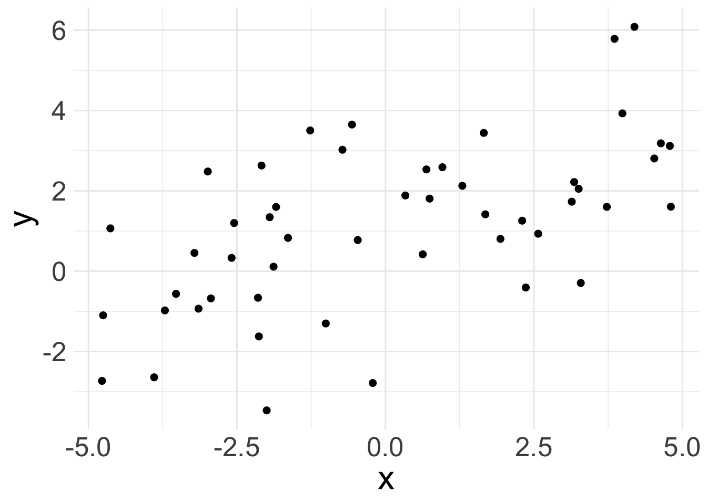
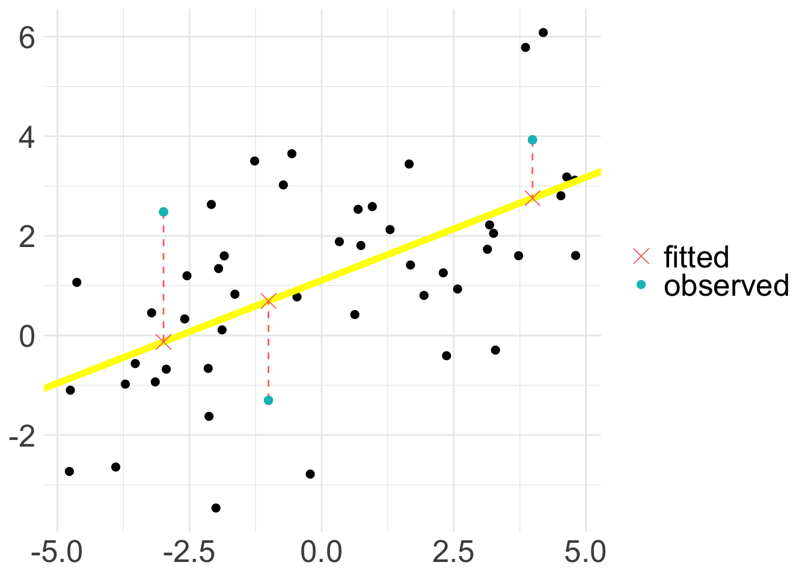
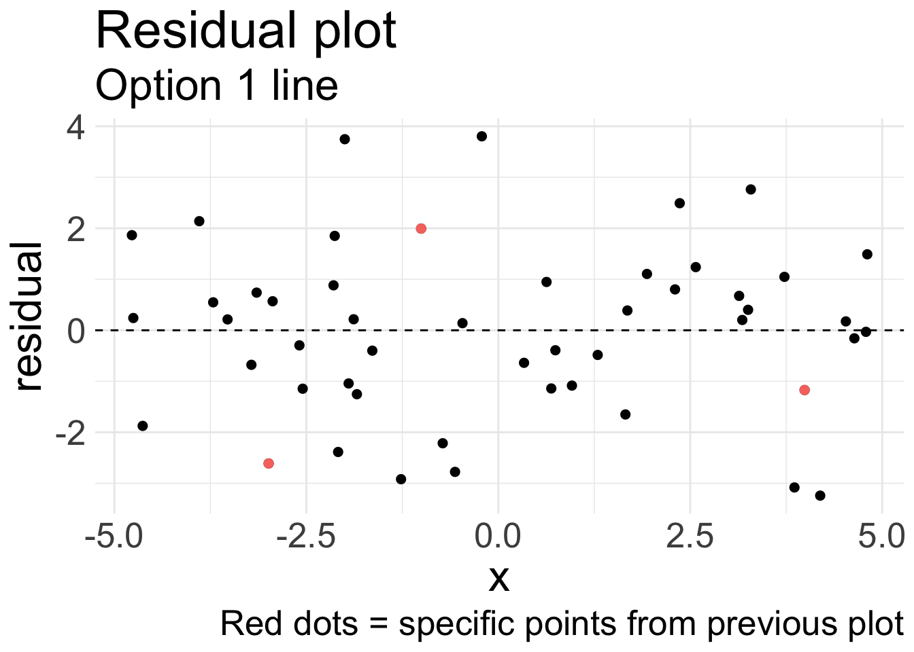
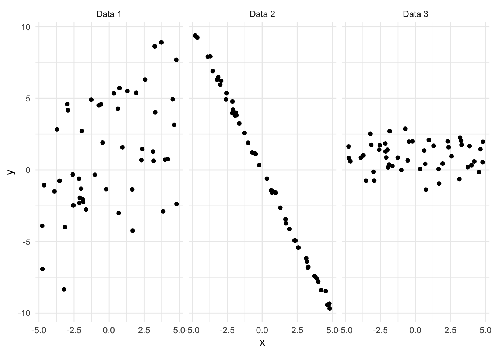
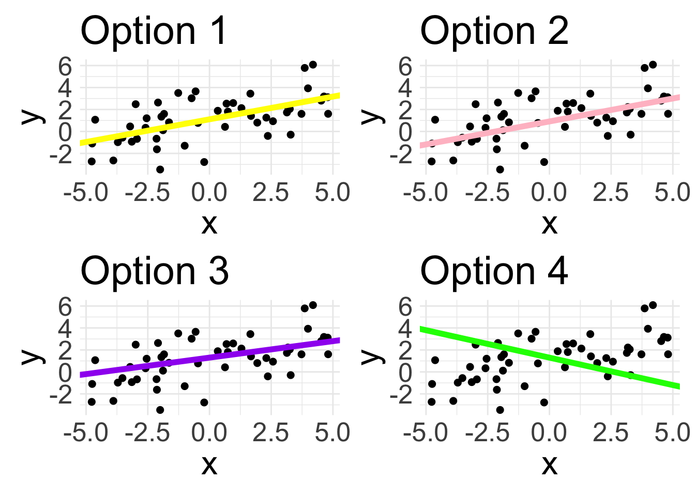

Introduction to Simple Linear Regression
Housekeeping
Homework 7 due tonight!
Last problem set is assigned today
Linear regression
Crash course; take STAT 211 for more depth!
Fitting a line to data
Hopefully we are all familiar with the equation of a line: \(y = mx + b\)
Intercept \(b\) and slope \(m\) determine specific line
This function is deterministic: as long as we know \(x\), we know value of \(y\) exactly
Linear regression: statistical method where the relationship between variable \(x\) and variable \(y\) is modeled as a line + error:
\[ y = \underbrace{\beta_{0} + \beta_{1} x}_{\text{line}} + \underbrace{\epsilon}_{\text{error}} \]
Linear regression model
\[ y = \beta_{0} + \beta_{1} x + \epsilon \]
We have two variables:
- \(y\) is response variable
- \(x\) is explanatory variable, also called the predictor variable
\(\beta_{0}\) and \(\beta_{1}\) are the model parameters (intercept and slope)
- Estimated using the data, with point estimates \(b_{0}\) and \(b_{1}\)
\(\epsilon\) (epsilon) represents the error
Accounts for variability: we do not expect all data to fall perfectly on the line!
Sometimes we drop the \(\epsilon\) term for convenience
Linear relationship
Suppose we have the following data:

- Observations won’t fall exactly on a line, but do fall around a straight line, so maybe a linear relationship makes sense!
Fitted values
Suppose we have some specific estimates \(b_0\) and \(b_{1}\). We could fit the linear relationship using these values as:
\[ \hat{y} = b_{0} + b_{1} x \]
The hat on \(y\) signifies that this is an estimate: the estimated/fitted value of \(y\) given these specific values of \(x\), \(b_{0}\) and \(b_{1}\)
- We observe \(y\), but can obtain a corresponding estimate \(\hat{y}\)
Note that the fitted value is obtained without the error
Fitted values (cont.)

- Every observed value has a corresponding fitted value; the above plot just shows three specific examples
Residual
Residuals are the remaining variation in the data after fitting a model.
\[ \text{data} = \text{fit} + \text{residual} \]
- For each observation \(i\), we obtain residual \(e_{i}\) via:
\[y_{i} = \hat{y}_{i} + e_{i} \quad \Rightarrow \quad e_{i} = \hat{y}_{i} - y_{i}\]
Residual = difference between observed and expected
Since each observation has a fitted value, each observation has a residual
In the linear regression case, the residual is indicated by the vertical dashed line
What is the ideal value for a residual?
Residual plot
Residuals are very helpful in evaluating how well a model fits a set of data
Residual plot shows residuals plotted at the original \(x\) locations, but now \(y\)-axis represents the residual

| x | y | y_hat | residual |
|---|---|---|---|
| -2.991 | 2.481 | -0.130 | -2.611 |
| -1.005 | -1.302 | 0.691 | 1.994 |
| 3.990 | 3.929 | 2.757 | -1.172 |
Residual plot (cont.)
Residual plots can be useful for identifying characteristics/patterns that remain in the data even after fitting a model.
Just because you fit a model to data, does not mean the model is a good fit!

Can you identify any patterns remaining in the residuals?
Describing linear relationships
Different data may exhibit different strength of linear relationships:

- Can we quantify the strength of the linear relationship?
Correlation
Correlation is describes the strength of a linear relationship between two variables
- Denoted by
Ror \(\rho\) - Formula (not important): \(R = \frac{1}{n-1} \sum_{i=1}^{n} \left(\frac{x_{i} - \bar{x}}{s_x} \right)\left(\frac{y_{i} - \bar{y}}{s_y} \right)\)
- Denoted by
Always takes a value between -1 and 1
-1 = perfectly linear and negative
1 = perfectly linear and positive
0 = no linear relationship
Nonlinear trends, even when strong, sometimes produce correlations that do not reflect the strength of the relationship

Least squares regression
In Algebra class, there exists a single (intercept, slope) pair because the \((x,y)\) points had no error; all points landed on the line.
Now, we assume there is error. So how do we choose a single “best” \((b_{0}, b_{1})\) pair?
Different lines
The following display the same set of 50 observations.
Which line would you say fits the data the best?

There are infinitely many choices of \((b_{0}, b_{1})\) that could be used to create a line for the data
We want the BEST choice (i.e. the one that gives us the “line of best fit”)
- How to define “best”?
Line of best fit
One way to define a “line of best fit” is to choose the specific values of \((b_{0}, b_{1})\) that minimize the total residuals across all \(n\) data points
Results in following possible criterion:
- Least absolute criterion: minimize sum of residual magnitudes:
\[ |\epsilon_{1} | + |\epsilon_{2}| + \ldots + |\epsilon_{n}| \]
Least squares criterion: minimize sum of squared residuals:
\[ e_{1}^2 + e_{2}^2 +\ldots + e_{n}^2 \]
The choice of \((b_{0}, b_{1})\) that satisfy least squares criterion yields the least squares line, and will be our criterion for “best”
Option 1 (yellow line) is our least squares line, whereas pink line is the least absolute line